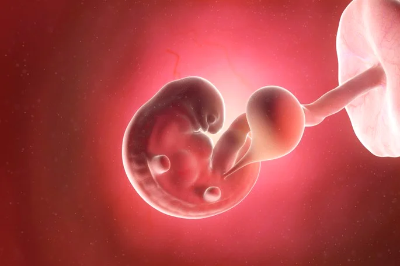

Aborto induzido pode trazer complicações graves Além de um risco maior, a longo prazo, de câncer .
Por Isaac Teixeira, Vida é Escolha?
Publicado em 12/06/2024 e atualizado ás 16:43
Um grande número de estudos feitos nos últimos anos indicam que mulheres que fizeram um aborto induzido (quando a gravidez é interrompida voluntariamente) têm um risco maior de desenvolver câncer de colo de útero. Mulheres com história de um aborto enfrentam 2,3 vezes maior risco de ter câncer de colo de útero, em comparação com mulheres sem história de aborto. Mulheres com dois ou mais abortos enfrentam um risco 4,92 vezes maior. Outros tipos de câncer também têm maior risco de se desenvolver após abortos simples ou múltiplos, como por exemplo o de ovário, mama e fígado. Este aumento das taxas de câncer para as mulheres pós-abortadas pode estar ligado à interrupção não natural das alterações hormonais que acompanham a gravidez.
O aborto provocado expõe a mulher a riscos e complicações imediatas que podem até levar à morte, principalmente quando é executado em casa ou em clínicas clandestinas, já que, nesses casos, costuma ser feito sem acompanhamento e cuidados médicos adequados.
Entre as complicações que podem ocorrer destacam-se:
Outra explicação é que o aborto induzido pode gerar lesões no colo de útero, que não são devidamente tratadas e podem progredir para um câncer. Além disso, o estresse causado por um episódio de aborto pode prejudicar o sistema imunológico, deixando o corpo mais suscetível à doença.
Há vários anos, o mês de outubro é conhecido por ser o mês de conscientização e diagnóstico precoce do câncer.